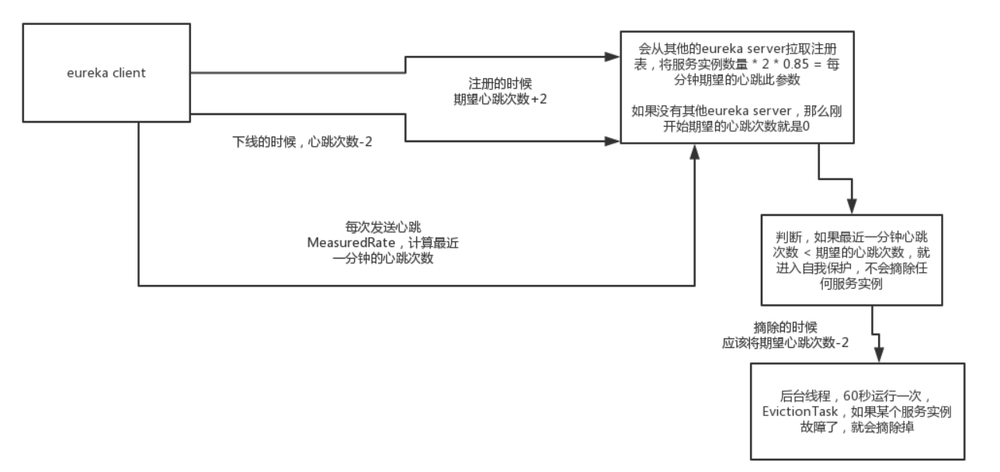

当Eureka-Server节点在短时间内丢失过多客户端时（可能发生了网络分区故障），那么这个节点就会进入自我保护模式。一旦进入该模式，Eureka-Server就会保护注册表中的信息，不再剔除注册表中的应用实例，也不接受新实例的注册。
那么，Eureka-Server是如何判断“短时间内丢失过多客户端”呢？这里涉及两个核心概念：
renewsLastMin ：上一分钟所有实例的实际心跳次数，Eureka-Server会在内存中进行统计；expectedNumberOfRenewsPerMin ：每分钟所有实例的期望最小心跳次数，通过总实例数乘以一个百分比（通过参数eureka.renewalPercentThreshold配置，默认0.85）计算得到。当renewsLastMin小于expectedNumberOfRenewsPerMin，就会触发自我保护机制。整个自我保护机制的流程可以用下面这张图表示：

我们首先来看下触发Eurek-Server进入自我保护模式的条件。首先，我们已经知道，Eureka-Server端有个服务剔除任务EvictionTask，该任务每隔60秒会检测一次租约过期的实例，并将它们从注册表剔除（eviction）。
EvictionTask任务运行时，最终调用AbstractInstanceRegistry.evict()去剔除过期实例，触发是否进入自我保护模式的判断就在这里：
/**
* AbstractInstanceRegistry.java
*/
// 期望的每分钟最小续租次数
protected volatile int numberOfRenewsPerMinThreshold;
// 期望的每分钟续租次数
protected volatile int expectedNumberOfRenewsPerMin;
public void evict(long additionalLeaseMs) {
logger.debug("Running the evict task");
// 如果触发自我保护机制，则直接返回，不再剔除过期实例
if (!isLeaseExpirationEnabled()) {
logger.debug("DS: lease expiration is currently disabled.");
return;
}
//...
}
/**
* PeerAwareInstanceRegistryImpl.java
*/
public boolean isLeaseExpirationEnabled() {
// eureka.enableSelfPreservation配置为true，则表示开启自我保护模式这个功能，默认为true
if (!isSelfPreservationModeEnabled()) {
return true;
}
return numberOfRenewsPerMinThreshold > 0 && getNumOfRenewsInLastMin() > numberOfRenewsPerMinThreshold;
}
上述PeerAwareInstanceRegistryImpl.isLeaseExpirationEnabled()首先根据配置eureka.enableSelfPreservation判断有没开启自我保护模式功能（默认是开启的），没有开启直接返回。否则，进行如下判断：
numberOfRenewsPerMinThreshold > 0 && getNumOfRenewsInLastMin() > numberOfRenewsPerMinThreshold
numberOfRenewsPerMinThreshold是什么？在哪里赋的值？实际上是在Eureka-Server启动时进行赋值的，Eureka-Server启动时会从集群其它Server节点拉取所有注册的应用实例数registryCount：
/**
* EurekaBootStrap.java
*/
// Copy registry from neighboring eureka node
int registryCount = registry.syncUp();
registry.openForTraffic(applicationInfoManager, registryCount);
接着，根据registryCount计算出expectedNumberOfRenewsPerMin和numberOfRenewsPerMinThreshold。
registryCount就是所有注册的实例数目，正常情况下，每个实例默认1分钟发送2次心跳，那所有实例1分钟就发送registryCount * 2 = expectedNumberOfRenewsPerMin次心跳。
接着再乘以一个百分比eureka.renewalPercentThreshold = 0.85，就得到了期望的每分钟所有实例的最小心跳次数numberOfRenewsPerMinThreshold：
/**
* PeerAwareInstanceRegistryImpl.java
*/
public void openForTraffic(ApplicationInfoManager applicationInfoManager, int count) {
this.expectedNumberOfRenewsPerMin = count * 2;
// 期望的一分钟内的所有实例的最小心跳次数 expectedNumberOfRenewsPerMin * 0.85
this.numberOfRenewsPerMinThreshold =
(int) (this.expectedNumberOfRenewsPerMin * serverConfig.getRenewalPercentThreshold());
logger.info("Got " + count + " instances from neighboring DS node");
logger.info("Renew threshold is: " + numberOfRenewsPerMinThreshold);
this.startupTime = System.currentTimeMillis();
if (count > 0) {
this.peerInstancesTransferEmptyOnStartup = false;
}
DataCenterInfo.Name selfName = applicationInfoManager.getInfo().getDataCenterInfo().getName();
boolean isAws = Name.Amazon == selfName;
if (isAws && serverConfig.shouldPrimeAwsReplicaConnections()) {
logger.info("Priming AWS connections for all replicas..");
primeAwsReplicas(applicationInfoManager);
}
logger.info("Changing status to UP");
applicationInfoManager.setInstanceStatus(InstanceStatus.UP);
super.postInit();
}
事实上，这里硬编码了每个应用实例每分钟发送2次心跳（默认30s一次心跳），这是有问题的，正确的计算公式应该是：
期望的每分钟所有实例的最小心跳次数 = 服务实例综述 * （60 / 心跳时间间隔） * 0.85
接着，我们来看下renewsLastMin的计算：
/**
* PeerAwareInstanceRegistryImpl.java
*/
public long getNumOfRenewsInLastMin() {
return renewsLastMin.getCount();
}
renewsLastMin是一个MeasuredRate对象，用来统计并存储每分钟实际的心跳此次数，里面有一个定时任务，每分钟会将统计数据清零：
public class MeasuredRate {
private static final Logger logger = LoggerFactory.getLogger(MeasuredRate.class);
// 上一分钟的心跳次数
private final AtomicLong lastBucket = new AtomicLong(0);
// 当前分钟内的心跳次数
private final AtomicLong currentBucket = new AtomicLong(0);
private final long sampleInterval;
private final Timer timer;
private volatile boolean isActive;
public MeasuredRate(long sampleInterval) {
this.sampleInterval = sampleInterval;
this.timer = new Timer("Eureka-MeasureRateTimer", true);
this.isActive = false;
}
public synchronized void start() {
if (!isActive) {
// 定时任务，每隔sampleInterval（60秒）执行一次
timer.schedule(new TimerTask() {
@Override
public void run() {
try {
// 清零重新计数.
lastBucket.set(currentBucket.getAndSet(0));
} catch (Throwable e) {
logger.error("Cannot reset the Measured Rate", e);
}
}
}, sampleInterval, sampleInterval);
isActive = true;
}
}
//...
public long getCount() {
return lastBucket.get();
public void increment() {
currentBucket.incrementAndGet();
}
}
每当Eureka-Server接受到renew请求时，就会调用increment方法将currentBucket值加1。
接着，我们再来看下expectedNumberOfRenewsPerMin这个用于判断是否进入自我保护模式的重要字段还会在哪些场景下更新。
Eureka-Server 初始化时，会创建一个定时任务，默认每隔15分钟计算一下expectedNumberOfRenewsPerMin 。实现代码如下：
/**
* PeerAwareInstanceRegistryImpl.java
*/
private void scheduleRenewalThresholdUpdateTask() {
timer.schedule(new TimerTask() {
@Override
public void run() {
updateRenewalThreshold();
}
}, serverConfig.getRenewalThresholdUpdateIntervalMs(),
serverConfig.getRenewalThresholdUpdateIntervalMs());
}
可以配置eureka.renewalThresholdUpdateIntervalMs参数，设置上述定时任务的执行间隔，默认15 分钟。
/**
* AbstractInstanceRegistry.java
*/
private void updateRenewalThreshold() {
try {
// 计算应用实例数
Applications apps = eurekaClient.getApplications();
int count = 0;
for (Application app : apps.getRegisteredApplications()) {
for (InstanceInfo instance : app.getInstances()) {
if (this.isRegisterable(instance)) {
++count;
}
}
}
// 计算 expectedNumberOfRenewsPerMin 、 numberOfRenewsPerMinThreshold 参数
synchronized (lock) {
if ((count * 2) > (serverConfig.getRenewalPercentThreshold() * numberOfRenewsPerMinThreshold)
|| (!this.isSelfPreservationModeEnabled())) {
this.expectedNumberOfRenewsPerMin = count * 2;
this.numberOfRenewsPerMinThreshold = (int) ((count * 2) * serverConfig.getRenewalPercentThreshold());
}
}
logger.info("Current renewal threshold is : {}", numberOfRenewsPerMinThreshold);
} catch (Throwable e) {
logger.error("Cannot update renewal threshold", e);
}
}
当有应用实例注册时，会更新expectedNumberOfRenewsPerMin。实现代码如下：
/**
* AbstractInstanceRegistry.java
*/
public void register(InstanceInfo registrant, int leaseDuration, boolean isReplication) {
// ...
synchronized (lock) {
if (this.expectedNumberOfRenewsPerMin > 0) {
this.expectedNumberOfRenewsPerMin = this.expectedNumberOfRenewsPerMin + 2;
this.numberOfRenewsPerMinThreshold =
(int) (this.expectedNumberOfRenewsPerMin * serverConfig.getRenewalPercentThreshold());
}
}
// ...
}
public boolean cancel(final String appName, final String id,
final boolean isReplication) {
// ...
synchronized (lock) {
if (this.expectedNumberOfRenewsPerMin > 0) {
this.expectedNumberOfRenewsPerMin = this.expectedNumberOfRenewsPerMin - 2;
this.numberOfRenewsPerMinThreshold = (int) (this.expectedNumberOfRenewsPerMin * serverConfig.getRenewalPercentThreshold());
}
}
// ...
}
可以看到，Eureka-Server每注册/下线一个应用实例时，就将期望的最小心跳次数expectedNumberOfRenewsPerMin加2或减2。当应用实例确实出现故障，需要剔除时，我没有找到更新expectedNumberOfRenewsPerMin的代码。
所以说，Eureka的自我保护机制的这块代码，是有bug的，如果有应用实例是因为故障而下线的，结果expectedNumberOfRenewsPerMin并没有减少，而实际的服务实例确实是变少了，那可能导致Eureka-Server异常进入自我保护模式。这也是为什么生产环境不建议开启自我保护机制的原因。
本章，我讲解了Eureka的自我保护机制，Eureka进入自我保护模式的条件是上一分钟实际收到的心跳总数小于某个阈值，这个阈值是通过应用实例数乘以一个百分比得到的。
Eureka在这个机制的代码实现上，存在很多问题，生产上不建议启用自我保护模式。